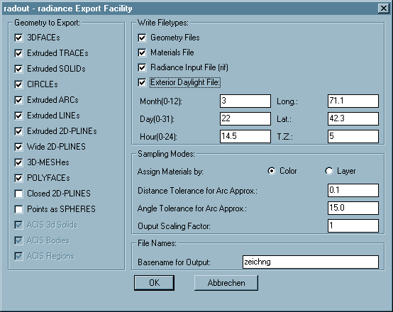

Radout 4.0.1
User Manual
Radout - Export facility from Autocad/Intellicad to Radiance scene
description.
Contents
Description
Software extension for Autocad/Intellicad to export data to the Radiance
lighting simulation package of the Lawrence Berkeley Laboratory.
Autocad/Intellicad entities can be selected and filtered in various ways.
Entities are sorted either by color or by layer.
The sorting results in seperate files written for every layer or color.
Optionally other files can be created.
This includes initial material definitions
(plastic with the color as visible in autocad), a setup of sun
and sky and a rif file as direct input to rad(1).
Only entities that are visible (that is their layer is on and thawed)
will be exported, even when nested in a selected block. This provides
another method of filtering elements of your drawing and is especially
useful when you want to update only part of a scene.
The layer name or color number will be part of each respective filename
to make it an unique identifier. The pipe character "|" used by
Autocad/Intellicad within layernames associated with externally referenced
blocks, as well as the dollar sign "$" are replaced by an underscore "_" as
they are illegal or at least confusing characters for filenames on most
systems.
Installation
Radout is "installed", if the files radout.arx and radout.dcl
are placed in a location which is included in
your Autocad/Intellicad support search path.
This support path is configured from the "Options" dialog.
Load the program through the APPLOAD dialog or
by entering (arxload "radout")
(including the parens) at the Autocad/Intellicad command prompt.
Interface
The program is started by typing
radout at the
Autocad/Intellicad command prompt.
This will open a dialog box to configure all export options:

Options
Write Filetypes:
The settings in the upper right frame specify which file types
to export:
Radout does not edit the exported files. Every time you export data,
any existing files with the same names will be overwritten
without warning.
-
Geometry files
-
This switch is on by default, as it is the basic purpose
of the program. Turning it off will disable the list of sampled
entity types and the sampling mode selection.
- Materials file
-
The materials of the exported objects will have
the same color (a plastic) as they appear with in autocad.
- Radiance Input File (rif)
-
This file can be given to the rad(1) program and contains
the basic information needed to run a simulation.
- Exterior daylight file
-
This option sets the parameters of natural lighting as
required by gensky.
The input fields activated by this option determine
your location (Longitude/Latitude) and time of day and year
(Month/Day/Hour/Timezone).
Sampling modes:
The settings in the lower right frame let you specify the way the
geometry will be converted.
- Assign materials by:
-
Select the sorting method out of the following.
- Color
-
The Autocad/Intellicad color number as visible on the screen.
This is the default and will help you when you organize
your drawing "visually".
- Layer
-
The layer of every subentity (the one which this entity
is created on). Choose this method if you use a conceptual
layering system independently from screen display colors.
The concept of floating layers and colors within (nested)
blocks is fully supported. That means a subentity within a
block with on layer "0" and/or with the color "byblock" will
appear on the layer and with the color of the containing block.
This continues recursively if the block has those properties as
well until a level with explicitly defined properties or the
top level block is reached. Toplevel entities with the
color "byblock" are drawn with color nr. 7 (white).
- Distance Tolerance for arc approx:
-
Arc entities and arc segments of polylines have to be meshed
for the use in Radiance. This value specifies
how smooth these meshes will appear in the final image.
Higher values will make smoother surfaces.
The default of 0.1. It is recommended to test for
optimised settings, balancing file size and visual accuracy,
since the optimal settings depends on the size and scale
of your model.
- Angle Tolerance for arc approx:
-
(This option is not available for all versions of Radout)
The surface normal of neighbouring mesh elements will not
differ by more than this amount in degrees. The default
is 15.0 degrees, which usually gives reasonable results.
The effect of this setting is independent of model size
and complexity. Please note that very low values (eg. below 2.0
degrees) can lead to unreasonably big output files and may even
crash Autocad/Intellicad when running out of memory.
- Output scaling factor
-
Output geometry will be scaled according to this factor. Radiance
preferrably uses international (SI) units, ie. meters.
Geometry to Export:
The switches in the left column specify which entity types get
extracted from your drawing and what type of surface they will
result in.
By default all entities that visible as a surface in Autocad/Intellicad
(opaque for the hide and shade/render commands) are activated.
Some other entity types can be used to simplify modelling but are
rendered differentely in Autocad/Intellicad than in Radiance.
Those are off by default and have to be enabled by the user explicitly.
All polygons should keep their orientation as created in
Autocad/Intellicad determined by the right hand rule as explained in
the Radiance tutorial.
Entities extruded by thickness will be inverted if their thickness
value (or "PDSIZE" for point entities) is negative.
2d-Polylines and lightweight polylines are treated the same.
The supported export types and their results are:
- 3DFACEs
-
3dfaces will be split to two triangular polygons if not planar.
- Extruded TRACEs
-
Traces will appear as a single polygon or as a box if the
thickness is non-zero.
- Extruded SOLIDs
-
Solids will appear as a single polygon or as a box if the
thickness is non-zero.
- Extruded CIRCLEs
-
Circles will appear as a ring with a inner radius of zero
or as a cylinder/tube with a ring at either end if their
thickness is non-zero.
- Extruded ARCs
-
Arcs with non-zero thickness will be segmented
according to the given arc tolerance.
- Extruded LINEs
-
Lines with non-zero thickness will appear as a single polygon.
- Extruded 2D-PLINEs
-
2d-polylines with non-zero thickness will appear
as a set of polygons.
- Wide 2D-PLINEs
-
2d-polylines with a non-zero starting width set in
their header entity (not the vertexes!) will appear as a
polygon following the trace of the polyline with a constant
width. This option will override the one below for poly-
lines that match both categories.
Together with a thickness and the respective option set this
will will result in a kind of a quadrilateral worm.
- 3D-MESHes
-
The Faces of 3d-polygon meshes will appear as a set of
polygons ignoring spline fits of any kind. Nonplanar faces
will be split into two triangles.
- POLYFACEs
-
The faces of polyface meshes will
appear as a set of polygons. Nonplanar faces will be split
into two triangles.
- Closed 2d-PLINES
-
2d-polylines with the closed flag set in their header entity
will appear as a polygon of the shape of the polyline.
Polylines with a width will not follow this rule if the
respective option above is chosen as well (Wide 2d-plines).
Together with a thickness and the respective option set this
will result in a prismatic volume of the shape of the polyline.
This option is off by default.
- POINTs as Spheres
-
Point entities will appear as spheres or bubbles depending on
either their thickness (if any) or else the value of the
Autocad/Intellicad system variable "PDSIZE". if the result is zero
the entity is ignored.
This option is off by default.
- ACIS entities
-
The three items relating to ACIS solid modelling entities
may be disabled for very old Autocad/Intellicad releases.
File Names:
- Basename for Output:
-
The names of all output files will start
with the string entered here. Default is the name of the drawing
file.
OK/Cancel buttons
The OK button starts the exporting after you have selected the
entities you wish to extract. The Cancel button discards all the
setting you have made and terminates the program.
Files
Program files
- radout.arx/radout.dll
- Main program file.
- radout.dcl
- Dialog box definition file.
Additional Files
- manual.html
- This File.
- radout-readme.html
- general info.
Data files (generated by Radout)
"Prefix" is the base name specified in the configuration dialog.
- <prefix>_l<layername>.rad
-
Geometry data written with the Layer or Toplayer
samplemodes set.
- <prefix>_c<colornumber>.rad
-
Geometry data written with the Color samplemode set.
- <prefix>_mat.rad
- Material definitions for exported files.
- <prefix>_sun.rad
- Daylight source definitions.
- <prefix>.rif
- Radiance input file for rad(1).
Requirements
Radout is meant to run with Autocad R12 and up,
and for Intellicad 2000 and up.
Most recent actively supported Platforms were Autocad 2000 (R13)
and Intellicad 2004.
Caveats
Please note that the AME solid modelling package by Autodesk as
included in Autocad R10-R12 generates
surfaces with surface normals pointing to the inside of the created
volumes (at least most of the times).
Models created with the AME Solid modelling package must have surfaces
defined with the command "SOLMESH". Otherwise they consist of only
wireframe information wich cannot be extracted by Radout.
The "SOLID" entities in Autocad/Intellicad, which can be extracted with the
"Extruded and flat Solids" option, have nothing to do with solid
modelling, AME or ACIS. These are a feature out of the 2D days of
Autocad and are just flat quadrilateral faces which appear solidly
filled when viewed from top. They form quadrilateral prisms if
extruded, which can only be done in a right angle to their ground plane.
Custom entity types defined by 3rd party applications ("proxies",
previously "zombies") are ignored, with the notable exception of
ACIS solid modelling entities.
Bugs
For multiple inserts, only one item is exported.
On SGI systems, if the last (closing) segment of a polyline is an arc,
it may end up in a very strange position. This happens most often with
donuts.
Authors
Philip Thompson (original author)
Georg Mischler (current copyright owner)
See Also
ADS and ARX Programmers Reference Manuals, Autocad Reference Manual
and Customization Guide for Autocad, AutoDesk Inc.
Tutorial and manual pages of Radiance 3.1, Synthetic Imaging System.
Gregory Ward Larson, Lawrence Berkeley Laboratory, Berkeley, CA.
License
The MIT License (MIT)
Copyright © 1994-1998 Philip Thompson, Boston MA, USA.
Copyright © 1999-2016 Georg Mischler, Munich, Germany.
Permission is hereby granted, free of charge, to any person obtaining a copy
of this software and associated documentation files (the "Software"), to deal
in the Software without restriction, including without limitation the rights
to use, copy, modify, merge, publish, distribute, sublicense, and/or sell
copies of the Software, and to permit persons to whom the Software is
furnished to do so, subject to the following conditions:
The above copyright notice and this permission notice shall be included in all
copies or substantial portions of the Software.
THE SOFTWARE IS PROVIDED "AS IS", WITHOUT WARRANTY OF ANY KIND, EXPRESS OR
IMPLIED, INCLUDING BUT NOT LIMITED TO THE WARRANTIES OF MERCHANTABILITY,
FITNESS FOR A PARTICULAR PURPOSE AND NONINFRINGEMENT. IN NO EVENT SHALL THE
AUTHORS OR COPYRIGHT HOLDERS BE LIABLE FOR ANY CLAIM, DAMAGES OR OTHER
LIABILITY, WHETHER IN AN ACTION OF CONTRACT, TORT OR OTHERWISE, ARISING FROM,
OUT OF OR IN CONNECTION WITH THE SOFTWARE OR THE USE OR OTHER DEALINGS IN THE
SOFTWARE.